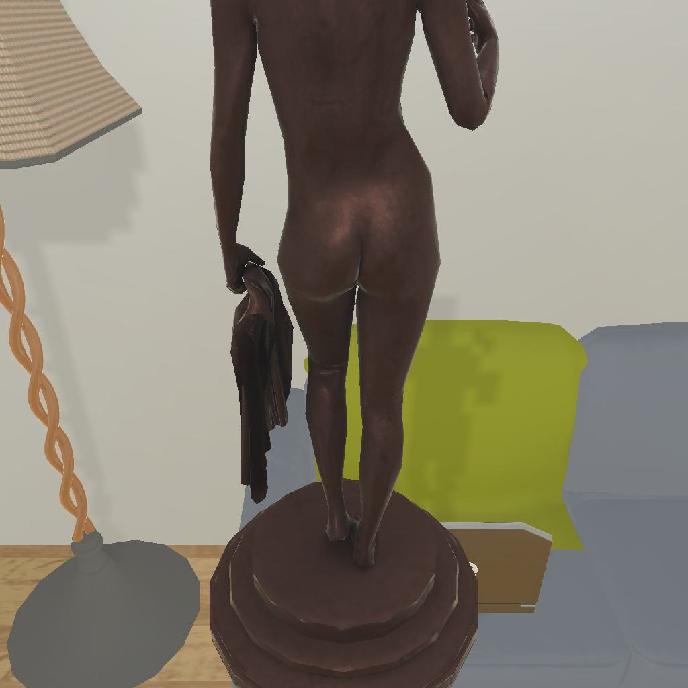

---------------------------------------------------------task: 4---------------------------------------------------------
--------------------------------------------------------------------------------------------------------------------------------------------------------------------
--------------------------------------------------------------------------------------------------------------------------------------------------------------------
Step:--------------------------------------------------------------------------10-------------------------------------------------------------------------------
----------------------------------------
VLM Prompt:
Image1:
**Instruction**
1. Analyze the provided image to identify all visible household objects, focusing on those relevant to the task description "examine the statue with the floorlamp."
2. Use the analysis of the image and the task hint "The agent must find an object of the desired type, locate and turn on a light source with the desired object in-hand." to answer the question: what is the most reasonable action in the choices for the task description "examine the statue with the floorlamp"?
4. Decide and write the answer using the template: The answer is: (i): , where i is the real number. If there is no desired object in the image, search every place based on **Initial Observation** to find the object. And if no one is exactly correct, choose a similar answer.
**Initial Observation**
You are in the middle of a room. Looking quickly around you, you can see armchair (1), coffeetable (1-2), sidetable (1), garbagecan (1), drawer (1), sofa (1), diningtable (1)
**Answer Choices**
(1): go to armchair 1
(2): go to coffeetable 1
(3): go to sidetable 1
(4): go to garbagecan 1
(5): go to drawer 1
(6): go to sofa 1
(7): go to coffeetable 2
(8): go to diningtable 1
(9): put statue 1 in/on sofa 1
(10): examine sofa 1
**Answer**
Let's think step by step by following the instructions.
----------------------------------------
----------------------------------------
Original Response:
First, we analyze the provided image. We can observe a statue and a floor lamp. The task description mentions examining the statue with the floor lamp, and the task hint suggests finding an object of the desired type (the statue) and locating and turning on a light source (the floor lamp) with the statue in hand.
Based on the Initial Observation, none of the listed objects seem directly related to the task of examining the statue with the floor lamp. However, the most reasonable action that aligns with the task description and hint would be to first locate the floor lamp, which is visible in the image, and turn it on to examine the statue.
Since none of the answer choices directly mention interacting with the floor lamp, we must choose the action closest to the task description. The most similar answer and reasonable action would be to go to the nearest object to the floor lamp to interact with it.
The answer is: (3): go to sidetable 1.
----------------------------------------
----------------------------------------
>>> Refine Original VLM Response and Get Pure Action: go to sidetable 1
----------------------------------------
-----------------------------------------------------------------
Running time: 11.14334774017334 seconds
Total Money: 1.1848699999999996
-----------------------------------------------------------------
-----------------------------------------------------------------
Text Observation:You arrive at loc 2. On the sidetable 1, you see nothing.
-----------------------------------------------------------------
UNSUCCEED